Introduction to Linear Algebra
Linear Algebra is a math based on the manipulation of linear equations through matrices and vectors. An important note to keep in mind is that linear algebra only deals with linear equations, which when plotted on a graph are straight lines. These types of equations can be represented by vectors.
If you've studied physics, you may remember vectors as a force with a direction and magnitude. Vectors have many visual representations and can be shown as a ordered pair, in matrix form, a system of equations, or as a line on a graph.
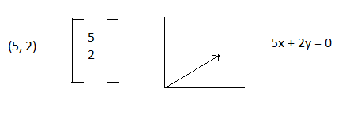 In this guide we will learn:
2. Dimensions
3. Vector arithmetic
4. Matrix Multiplication
5. Inner Dot Product and Orthogonality
6. System of Linear Equations
7. Row Echelon Form
8. Reduced Echelon Form
9. Linear Combination and Span
10. Linear Independence
11. Matrix Inverse
12. Determinants
13. Bases and Orthogonal Bases
Magnitude and Unit Vectors
Vectors have magnitudes which are similar to the lengths of lines, and can be calculated similarly as well. The notation for the magnitude of a vector is: ||a||. Let's see how we can calculate it:

If we take the magnitude of a vector and its direction, we can also create another important value - the vector's unit vector. A unit vector has a length of 1 unit, and it shows the direction of the vector regardless of magnitude or length of the original vector. The formula for a unit vector is shown below. It's notation is the same letter as the vector, however it has a carrot on top: 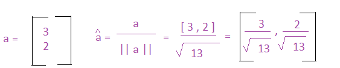
Brief Discussion on Dimensions
You probably noticed in the introduction that the vectors had 2 numbers. This vector has 2 dimensions which can be represented by R2. The R represents real numbers, and the superscript number represents the number of dimensions.
In this text we will use R to represent real numbers, but it is usually represented by:
 .
The superscript number can be any positive number, and we can represent it generally as Rn. For the majority of this index we will deal with real numbers, and then later switch to complex numbers. If we are working with vectors with complex numbers the Rn changes to Cn.
.
The superscript number can be any positive number, and we can represent it generally as Rn. For the majority of this index we will deal with real numbers, and then later switch to complex numbers. If we are working with vectors with complex numbers the Rn changes to Cn.
Basic Vector Maths
Addition
If you're trying to add two vectors together, you add the corresponding components. The two vectors below can also be represented as: (1x+3y) and (5x+7y). The x components correspond with each other, and the y components correspond with each other. Notice in the example below that the size of the final matrix is the same size as the two matrices being added. In order to add matrices, the matrices have to have the same number of rows and columns: 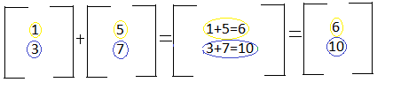
When the matrix becomes larger, it can initially look more difficult, but the same rules above apply. Take into consideration the numbers position in the matrix. For example "1" in the first matrix is in the first row and the first column. "5" in the second matrix is in the first row and the first column. Because these two numbers are share positions in the matrix, we add them:

Subtraction
Matrix subtraction is very similar to matrix addition. The only change is that instead of adding the corresponding numbers, you subtract them. The two vectors below can be represented as: (1x+3y) and (5x-5y). To subtract the two vectors, you would subtract the x components and subtract the y components. Notice in the example below that the size of the final matrix is the same size as the two matrices being subtracted. In order to subtract matrices, the matrices have to have the same number of rows and columns:

Similar to larger matrix addition, large matrix subtraction just requires subtracting the corresponding components from each other. For example "5" in the first matrix is in the first row and the first column. "1" in the second matrix is in the first row and the first column. Because these two numbers are share positions in the matrix, we subtract them:

Scalar Multiplication
As discussed in the beginning, a scalar has no direction and cannot be represented in a matrix. You can however multiply a vector or a matrix by a scalar. Simply multiply each number in the matrix by the scalar. The resulting matrix will have the same number of rows and columns as the original matrix:
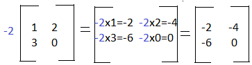Vector Multiplication
Multiplying two vectors is a bit more complicated than addition, subtraction, or scalar multiplication, but with some practice you'll get the hang of it. There are a few simple rules you have to know in order to properly multiply matrices:
1. You can only multiply matrices if matrix A has the same number of columns as the number of rows in matrix B. So if matrix A is a 2x3 matrix, and matrix B is a 3x4 matrix, you can complete the equation AxB.
2. The result of the matrix changes if you change from AxB to BxA, and you may not be able to multiply BxA if it does not fulfill rule 1.
3. To multiply two matrices, follow the row column multiplication. For example, let's say you have the equation AxB=C, you take the numbers in the first row of matrix A and multiply them against the numbers in the first column of matrix B and add the products. Your result will be the number in the first row and first column in matrix C.
4. If you can multiply AxB, the resulting matrix will have the same number of rows as matrix A, and the same number of columns in matrix B.
These concepts are illustrated below:
Rule Number 1 & 2: As you can see in the examples below, you can only multiply matrices if they number of columns in matrix A equals the number or rows in matrix B:


Rule Number 3 & 4: If you look at the two examples below, you'll see that the matrix below is divided by rows, and the second matrix is divided by columns. This is a visual to aid you with row column multiplication. We can see that we multiply the first row of matrix A by the first column of matrix B. The first variable in row one is multiplied by the first variable in column one. The second variable in row one is multiplied by the second variable in column one. This trend continues and then you sum the products:
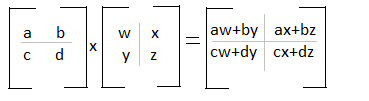
If you analyze the diagram below, you can see that the values of the first row in matrix A, will be found in the first row of matrix C. You will also see that the values in the first column of matrix B will be found in the first column in matrix C.

Inner Dot Product
The inner dot product is an important concept that can provide a way to tell you a lot of information about two vectors, including the angle between the two vectors. It can also show you the effect the two vectors will have on each other- will they cancel out to 0, will there be positive growth, or will there be a reversal.
Getting the dot product is similar to matrix multiplication that we learned earlier, but it deals with 2x1 and 1x2 vectors:

There's a special name for two vectors that when multiplied have an inner product of 0. Those vectors perpendicular to each other and are known as orthogonal vectors. You can have a set of orthogonal vectors, if each vector is mutually perpendicular to each other. For example:
 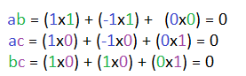
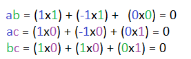
We can convert mutually orthogonal vectors into a set of Orthonormal vectors, meaning that not only are the vectors mutually orthogonal, each vector also has a unit length of 1.
Bringing Equations Together: System of Linear Equations
In previous sections we have looked at vectors as being separate from each other- we added them, subtracted, multiplied, etc. However systems of linear equations are quite common, and you might remember them from algebra.
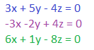You may have used a method like substitution to solve this system of equations, however in linear algebra, we can find out if there is a solution and what it is by using matrices. The matrix representation of this system looks like:
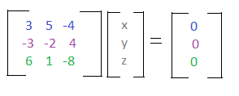You can infer from the colors that each line in the matrix represents one of the equations. We can use this matrix form to create an augmented matrix, which we will use to solve the system! An augmented matrix holds both the coefficients, and what each equation equals.

Each row represents the coefficients of an equation. Each column represents the coefficients for each variable. Now that we have the equations in an augmented matrix, the next question you may be asking is - how do we find the solution? To do this we will have to transform the matrix into its Row Echelon Form.
Row Echelon Form
When working with a system of equations, it's easier to find the solution if you're working with reduced equations. For example instead of using 4x + 16y = 0, you can use x + 4y = 0. Augmented matrices work the same, and have a form called Row Echelon Form. Here is a matrix in row echelon form:
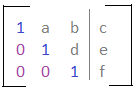 Here are the characteristics of the Row Echelon Form:2. Each leading coefficient is to the right of the leading coefficient above it.
3. Rows that are all zeros are below rows that contain nonzeroes.
Why is this form helpful? Remember from earlier, that each column represents the coefficients for a variable, like x or y or z. If we cancel out the values of variables in each column, it will make it easier to find the solution to the matrix.
Now that we know both the row echelon form rules and why it is useful, we can learn how to transform an augmented matrix into the row echelon form.
Row operations are relatively simple to grasp, and allow you to manipulate and simplify the system of equations. You can do the following:
2. Multiply or divide a row by a scalar
3. Subtract or add rows
Here is an example. The rows are represented in both color, and by R1, R2, R3, R4: Notice how each operation is illustrated with an arrow, and a bit of text saying what operations are being done. This step can sometimes be skipped and replaced with a ~.
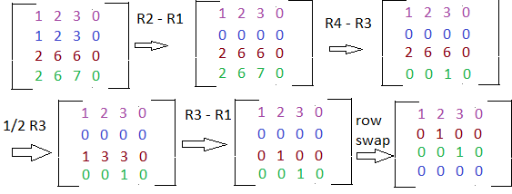 The new system of equations is: 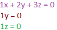As you can tell, it would be quite easier to find the solution to this system. But we can actually make this even more simpler. We can use the Reduced Echelon Form.
Reduced Echelon Form
The Reduced Echelon Form has the following properties:
2. Each leading coefficient is to the right of the leading coefficient above it.
3. Rows that are all zeros are below rows that contain nonzeroes.
AND the added property:
4. Leading coefficients are the only nonzero number in their column.
The augmented matrix we ended up with in the above example was in row echelon form, however if we do the row operation R1 - 2R2, and R1 - 3R2, we can get the matrix into Reduced Echelon Form.
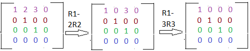You can already see the perks of reduced echelon form! It saves the need for additional algebraic work. The transformed system of equations is:
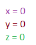When we get a matrix into row echelon or reduced echelon form, we can actually see how many solutions the matrix is going to have. Matrices can have: 0, 1, or infinite solutions.
A matrix with 0 solutions is: an inconsistent matrix. This matrix can have all 0s in a row, and then have a nonzero in the augmented part of the matrix in the same row.
A matrix with 1 solution is: a matrix that has a leading coefficient in each column.
A matrix with infinite solutions is: a matrix with a free variable. You can tell if you have a free variable if you have a column that does not have a leading coefficient, or a pivot, in it.
Linear Combination and Span
Linear combination and span may seem like foreign words to you right now, but they have simple and easy to understand meanings, and you've already had experience with one of them!
A linear combination of vectors is just a summation of the vectors together. You can multiply each vector by a scalar before adding, or even subtract the vectors, and you'll get a linear combination. For example:
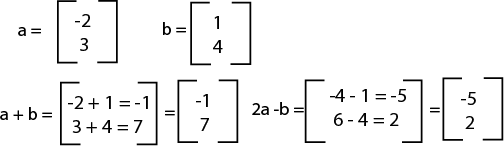Depending on the vectors, you may notice that there's a large number of possible linear combinations for the vectors. If you were to find all the linear combinations, you'd get a span. An example notation for span is:
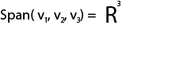Where v1, v2, and v3, are vectors.
For example:
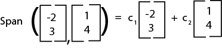Where the c's are any scalar value.
It can be incredibly helpful to learn if a vector falls in the span of a set of vectors, and there's a simple way to learn this information: creating a system of linear equations, then a matrix, then getting the reduced echelon form.
Let's say we have the vector u = (4 , 38) and we want to know if it is a linear combination of the two vectors above. Here's how we would solve it:
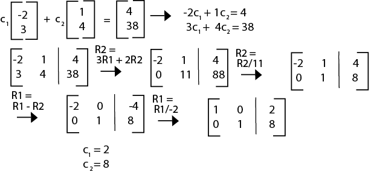Linear Dependence
Our next topic is linear dependence, and how to use matrices to learn if a group of vectors are linearly independent. A group of vectors are linearly independent from each other if the only solution to the vectors is a vector of all 0s. If there exists a solution of not all zeroes, the vectors are linearly dependent.
Let's say that we have three vectors s, t, and u. We can combine them into one augmented matrix.
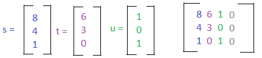We can then learn if these vectors are linearly independent or dependent by putting the matrix into row echelon form.
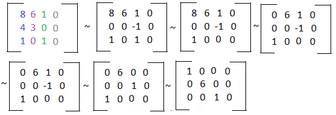As we can see, there is a leading coefficient in each column, so there are no free variables. This matrix only has one solution - a vector of all zeroes, and so the set of vectors are linearly independent. If there was a free variable, the set of vectors would be linearly dependent.
Matrix Inverse
Just like many values have an inverse, for example the inverse of 5 is ⅕, matrices also have inverses. When you multiply a matrix by its inverse, you get an identity matrix. An identity matrix is a matrix with 1's on the main diagonal, and every other number is a zero. For example the following are identity matrices.
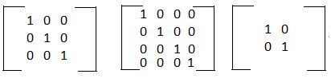The notation for the inverse of Matrix A is A-1.
A matrix that is not invertible is known as a singular matrix.
There are a few methods for discerning whether or not a matrix is invertible: 1. The matrix is a square matrix. It is nxn. 2. The determinant is nonzero. 3. There is a pivot position in each column, meaning the columns of the matrix are linearly independent. 4. Matrix A is row equivalent and column equivalent to its identity matrix. This means that Matrix A can be transformed into its identity matrix with simple row operations.
Now that we know the rules for quickly guessing if a matrix has an inverse, we can look at the methods for finding the inverse of the matrix. The basic premise is setting up the matrix [ A I ], I being the identity matrix, and performing row operations until we get the side where A is to be equivalent to the identity matrix. The new values on the right side of the matrix, where I used to be will be the values of A-1.
Let's try this out with an example.
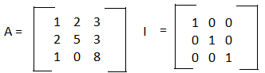We can merge these matrices together and form the matrix [ A I ] and then use row operations to find the inverse.
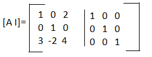 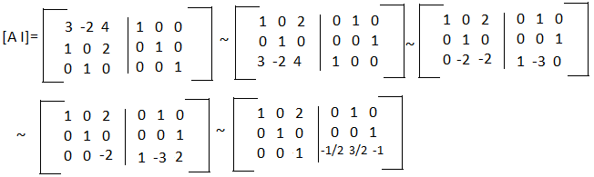 Our A-1 is: 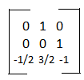Determinants
Now you may have encountered a new phrase, determinant, in the rule set for determining if a nxn matrix has an inverse. A determinant is computed from the values of a square matrix and is represented as: det(A). When calculating the determinant of a matrix, you also want to change the [ ] brackets to straight lines like | |. The notation is shown below.
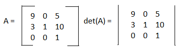We'll start with finding the determinant for a 2x2 matrix. The formula for the determinant for a 2x2 matrix is:
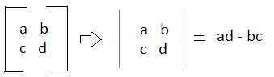For example:
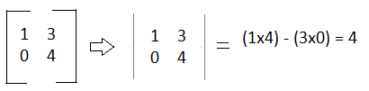The formula for finding the determinant for a 3x3 matrix is:

The basic concept of it is take a row or column, take each element, and multiply it against the determinant of a matrix made from the elements that are in different rows and columns. So we take a and multiply it by the determinant of the matrix e,f,h,i because those values are not in a's row or column. Now you may have noticed that b has a minus sign in front of it. This is because or b's placement in the original matrix. Here's a visual of which elements will have a negative or positive sign.
As you can see it follows a + - + - pattern in each row and column. The formulas for larger matrices are similar to the formula for a 3x3 matrix, but there's more break down, and it can take a long time. It is faster to learn how to plug matrices into a graphing calculator.
Subspaces
Before we get into subspaces, let's go over some quick notations. Let's look at:
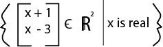There are two parts to this notation, and they are divided by the straight line in the middle. The first part shows you the possible values of the vectors, such as the first value being x+1 and the second value being x-3. The "c" with a line through it stands for "is a set of", and tells us that all the possible vectors will be two dimensional and have real numbers. To the right of the line is a constraint. Here the constraint is very broad, x just has to be a real number. We can take the possible values of x, and its constraint, and learn whether or not this set of vectors is a subspace.
Let's say we have the set of vectors that lie in Rn, and we take a subset of those vectors, and call it V. For V to be a subspace, it needs to have the following qualities:
2. Closure under scalar multiplication: If you take any vector in V and multiply it by a scalar, that vector will also be in the subspace V.
3. Closure under vector addition: You can add any two vectors in V, and the new vector will also be in V.
Let's take a look at the figure above and see if it fits the rules of a subspace:
Let's try another example:

Here we know that the vectors will be 2 dimensional and only contain real numbers. We also have the constraint that x1 has to be greater than or equal to 0. The value x2 has no constraints on it and can be negative or positive.
Let's try rule 1, the inclusion of the zero vector: It passes because according to the constraints, both values can be equal to 0.
Let's try rule 3, closed under vector addition: The constraint tells us that all values of x1 will be greater than 0, and a positive number plus a positive number is a positive. So we know that this set of vectors is closed under addition.
Let's try rule 2, closed under scalar multiplication: Scalars can be positive, negative, or 0. If you multiply a positive number (which x1 has to be) by a negative, the product is a negative. If x1 has a negative value, the vector no longer fits the constraint. So we now know that this set of vectors are not a subspace.
Basis for a Vector Space
A basis B of a vector space V is a set of vectors that meet two criteria:
1. Spans V
2. B is linearly independent
A standard basis, or a natural basis, are composed of vectors like:
- e1 = (1, 0, 0, ..., 0)
- e2 = (0, 1, 0, ..., 0)
- en = (0, 0, ..., 1)
Where n is the dimension you are working in, such as R2 or R6.
There are are few steps to create a basis from a set of vectors:
1. Take the set of vectors and create an augmented matrix
2. Use row operations to transform the matrix to reduced echelon form
3. Pick out the columns with leading 1's, and match these columns up with the vectors in the original matrix. Your basis will be a set that contains only those vectors
Let's try it out with an example with the following vector set:
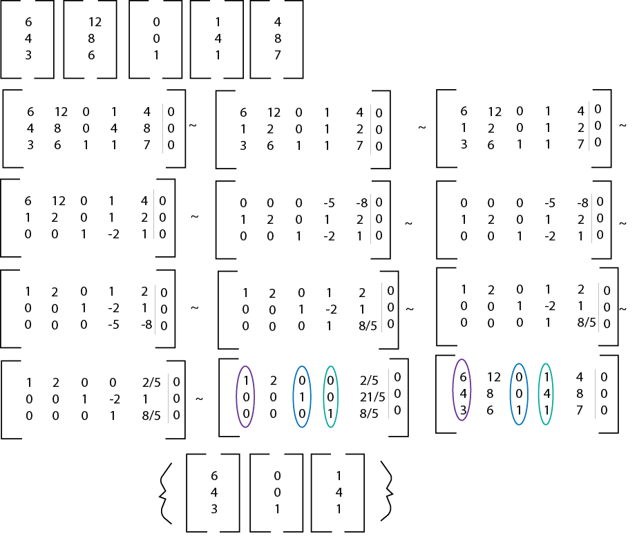Notice how the basis is composed of 3 vectors, and each vector has 3 elements in it, and is in R3. Every basis will have n vectors where Rn.
Orthonormal Basis
An orthonormal basis is a set of vectors who are all perpendicular to each other, and who all have a magnitude of 1. They are all unit vectors. An orthonormal basis is useful because it shows the relationship between the vectors regardless of magnitude.
Introduction to Complex Numbers
Quantum Mechanics relies on the usage of complex numbers because the real number set is too limited. There are many equations that do not have a real number solution, such as: 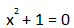
If you were to solve this equation you would get: √(-1)
Now this number does not exist in the real numbers set, but if we expand into the complex numbers set, and we make i = √(-1), we can now find the solutions to more equations.
In this guide we will cover:2. Properties and Operations with Complex Numbers
3. Modulus of Complex Numbers
Properties and Operations with i
Earlier we learned that i = √(-1). We can take this knowledge and extend it in these ways:
2. i3= -√(-1) OR -i
3. i4= 1
4. The square root of every negative number is imaginary
So we can now take values such as √(-25) and transform it with the following steps:

Here's another example:
Notice in both the examples above, the iis behind the number, just like a variable is.
Now that we know the properties of i we can learn how to do operations with imaginary numbers.
You might have noticed while looking at the properties of i that i acts similarly to how a variable would, and this is true. If you treat i like the variable x, you can quickly grasp addition, subtraction, and multiplication with imaginary numbers.
Addition and Subtraction
Remember, you can treat i like a variable, because it essentially is representing √(-1). So the rules of adding and subtracting imaginary numbers is the same rules as adding and subtracting variables. Let's start with the following examples:
2. 12i2+6i2 = 18i2
3. 12i2+6i2+8i +4i = 12i+18i2
We combine like variables with like variables, and just like how we treat x, x2, and xn as separate variables, we treat i, i2, and in as separate variables. Subtraction rules apply the same.
Multiplication and Division
The rules of multiplying and dividing imaginary numbers are the same rules for multiplying and dividing variables. You multiply the i variables by i variables, and you multiply the coefficients by each other. You divide the i variables by i variables, and you divide the coefficients by each other. For example:
2. 12i * 2i2 = (12*2)(i*i2) = 24i3
3. 8i * 3i + 12i * 2i = (8*3)(i*i) + (12*2)(i*i2) = 24i2+ 24i3
It's important to note that these answers aren't the final answers and simplifying imaginary numbers will be covered below. Division is Similar.
Simplifying Imaginary Numbers
After multiplying or dividing imaginary numbers, you may find yourself with numbers such as: i8, i33, i-100, or i-6; and these numbers are not actually in their simplest form. Because we have 4 values of i that are easy to work with: i = √(-1) , i2 = -1, i3= -i, and i4 = 1; we can simplify these large exponents in four steps:
2. Figure out what is leftover, is it 0,1,2 or 3. Get rid of the original imaginary number and replace it with i to the leftover power
3. Simplify further if necessary
For example let's simplify the imaginary number 7i8:
2. There is a leftover of 0: 7i0
3. Simplify if necessary: 7
Let's try another example with the imaginary number 8i33:
2. There is a leftover of 1: 8i1
3. Simplify if necessary: 8i
Operations and Properties of Complex Numbers
Now that we know how to manipulate imaginary numbers, we can move forward with complex numbers. Complex numbers are useful for measuring oscillating values and waves!
Properties of Complex Numbers:A complex number is simply the addition or subtraction of a real number and an imaginary number. It takes the form of: a + bin where a, b, and n are real numbers, and i represents any imaginary number. It's important to remember that the value bin is in total, an imaginary number.
Here are some examples of complex numbers:
3 + 5i
2 - 7i5
2 - √(-69)
123 + √(-234)
Complex numbers that have an exponent of 1 can be plotted on the complex plane, which looks similar to the real numbers plane you have most likely dealt with before. To map the complex number on the plane you need to transform it into an ordered pair.
1. The real number becomes the "x coordinate"
2. The imaginary number becomes the "y coordinate"
Notice that "x coordinate" and "y coordinate" are in parenthesis. That's because I used the terms that are appropriate for the real numbers plane. Complex numbers, however do not have an x and y plane, they have the real numbers plane and the complex numbers plane. But if it's easier to remember and visual, you can equate the complex plane with the y plane, and the real numbers plane with the x plane.
Let's practice transforming complex numbers into ordered pairs: 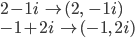 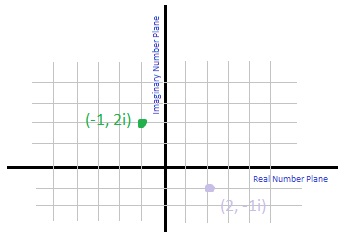
Operations With Complex Numbers:If you understand how to do basic algebra, you'll have no issue understanding how to do basic operations with complex numbers.
Addition and Subtraction:Similar to algebra, when adding complex numbers we can add or subtract the real numbers together, and similarly to working with imaginary numbers, we can also add or subtract the imaginary numbers from each other.
For example, let's say we have the complex numbers:
2+5i and 4-6i, if we wanted to subtract them, we would do the following:
1. Set up the expression:(2+5i) - (4-6i)
2. We then foil the minus sign to the second complex number so we can get rid of the parentheses: 2+5i - 4 + 6i
3. We can then combine like terms, which means combining the real numbers and combining the imaginary numbers: (2-4) + (5i+6i)
4. Then we add or subtract and get our final answer: -2 + 11i
* Adding is a similar process
Multiplying complex numbers requires foiling the complex numbers. This means foiling the first number of the first complex number, by both the first and second number of the second complex number. Then multiplying the second number of the first complex number by the first and second number of the second complex number. Then combine like terms. We'll demonstrate below.
Which we can simplify to: 10 + (-5i) + 4i + (-2i2)
And then we combine like terms: 10 -i -2i2
We can then simplify any imaginary numbers with exponents: -2i2 = -2(-1) = 2
We can then simplify again: 10 - i + 2 = 12 - i
Dividing requires an extra bit of knowledge: knowing the complex conjugate of a complex number. 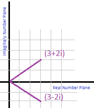
The complex conjugate of a complex number, is the complex number reflected over the real number plane. This basically means that to get the complex conjugate of a complex number, make every i a -i.
Here are a few examples: 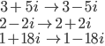
The complex conjugate is important because its vital in dividing complex numbers. To divide two complex numbers, you essentially create a fraction with a numerator and a denominator. For example if we have: 6 + 3i / 2+i we have the fraction:
To solve this, we have to multiply the numerator and the denominator by the complex conjugate of the denominator - in this case the complex conjugate of 2 + i. We know from earlier that the complex conjugate is 2-i.
Quantum Gates
The most common representation of a qubit is modeled with an electron and its spin. The state of the qubit can be visualized using a Bloch Sphere where the current value is represented by Ψ. The sphere has 3 axises and the spin is any location inside of the sphere. The Z axis is used to measure the the value of the qubit. If the qubit returns a value of 0, the location is at +Z on top of the sphere. If the value reads 1, the location is at -Z on the bottom of the sphere. In other words, you can think of a qubit value of 0 being the electron in its spin up state and the qubit value of 1 being the electron in the spin down state. Gates are used as operations on the qubit. An operation on a qubit is the rotation of the qubit state to a different point on the Bloch Sphere. There are multiple types of gates with some that operate on single qubit and others that operate on multiple qubits. The single qubit gates are the simplest to represent with matrices. 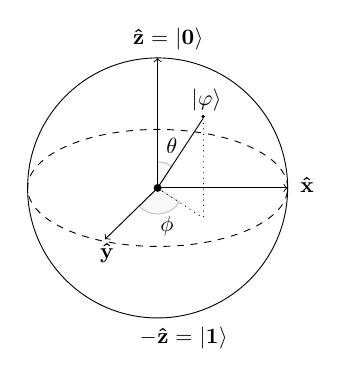
Pauli Gates
A Pauli gate operates on a single qubit at a time to rotate its state and the rotations are measured in radians. There are 3 different types of Pauli Gates, X, Y, and Z. Each gate corresponds to an axis on the a Bloch Sphere. The X gate is identical to the NOT gate in classical computing in that it inverts the given value. If the current state of the qubit is 0 at the top of the sphere, performing a Pauli X operation rotates the state around the x-axis by π radians (180 degrees) placing the new state at the bottom with a value of 1. All gates in quantum computing can be represented by a matrix. To perform the gate operation using a matrix, you simply multiply the gate matrix by the qubit matrix, but because of how matrix multiplication works, the gate must always be to the left of the qubit matrix.
Pauli X Gate 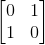 multiplied with qubit 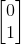 yields 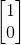 .
The Y gate acts in the say way as the X but rotates the state about the y-axis by π radians. The Y gate is interesting because it uses the imaginary numbers i and -i instead of a value of 1. The matrix for the Y gate is 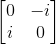 . Similarly, the Z gate rotates about the z-axis by π radians. Unlike the X and Y gates, the Z gate has no effect if the state is at 0. A Z gate operation on 0 yields 0, but the operation on 1 yields -1. This can be seen in the following matrix multiplications.
Z-Gate 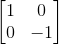 multiplied with the qubit yields 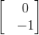 .
Hadamard Gates
Although they act on quantum properties of electrons and change the spin, Pauli gates still only return a single value. The real power of quantum computing occurs when you introduce superposition and that's where the Hadamard Gate comes in. A qubit naturally wants to be in superposition, but we cannot have values that start off in superposition (because observing superposition forces the qubit to choose a value). The qubit value must be initialized to a definite known state first before it can be operated on. The Hadamard gate is used to turn initialized qubits back into their natural state of uncertainty where there's 50/50 odds of the qubit being spin up or spin down. This operation is represented on a Bloch sphere as a rotation about the x-as by radians and then a rotation about the y-axis by π/2 radians.
The matrix representation for the Hadamard gate is 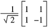.
Phase Shift Gates
The Pauli Z gate is actually a special case of the phase shift gate. The properties of phase shift gates are that they do not operate on 0 (spin up) and perform eiΨ on 1 (spin down). The symbol Ψ is any value between 0 and 2π. For example, the Pauli Z gate has a phase Ψ=π. Other common phases are π/2, π/4, π/8.
The general phase shift gate matrix is 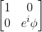.
Controlled Gates
Controlled gates are multi qubit gates that have at least one qubit for a control and at least one qubit for a target. The gate will only operate on the target qubit if the control qubit is in a certain state. Any quantum gate can become a controlled gate simply by adding the identity matrix to the top left corner of the gate matrix and filing in the rest with zeros. For example, the Pauli X gate is always referred to as the quantum NOT.
If the identity matrix I is 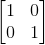 and the NOT matrix is then the Controlled-NOT or CNOT is 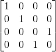.